| 日付 | 2010年1月11日（月） |
|---|---|
| 山域 | 谷川 |
| メンバー | 単独 |
| 山行形態 | 日帰り |
| アクセス | 電車、バス |
| ルート (Map) | 赤沢スキー場入口→登山道途中→赤沢スキー場入口 |
ずっと続いていた冬型の気圧配置がようやく緩んできた。
長い間、吹雪に閉ざされていた北方の山々にも少し晴れ間が見られそうだ。
せっかくの機会なので、谷川連峰の稲包山に行ってみることにする。
この季節だと相当に雪が多いはずで登頂成功の可能性はかなり低いが
たまには撤退するのもいいだろうという事で、とりあえず行って見る事にする。
8:57 赤沢スキー場入口バス停到着。標高755m。
ここは完全な雪国。車道も雪に覆われている。
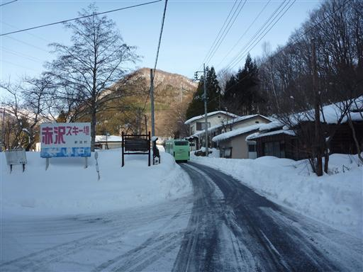
少し歩くと赤沢登山口の標識が見つかる。
登山道入口からすでに膝まで雪が積もっている。
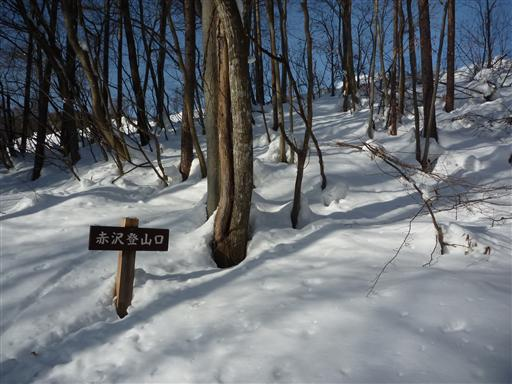
少し坂を登るとスキー場に出てくる。スキー場は雪が固められているため歩きやすい。
しかし、スキーヤーが滑っている横をザックを背負って歩くのは、どうも落ち着かない。
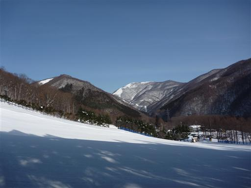
スキー場から横に外れて四万温泉への登山道に入っていく。
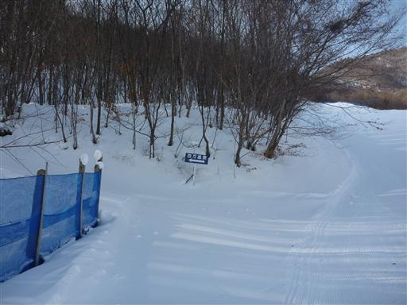
木にはこってりと雪が積もっている。
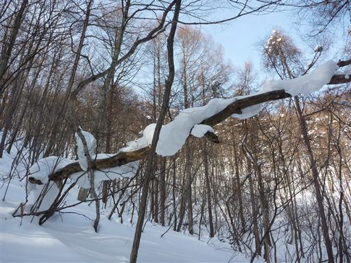
雪は膝まで潜る。動物の足跡が点々と付いているが、ほとんど雪に潜っていない。
体重が軽いからだろうか？鹿のような大型動物だと人間同様潜ると思うのだが、
そのような足跡はなぜか付近に見当たらない。
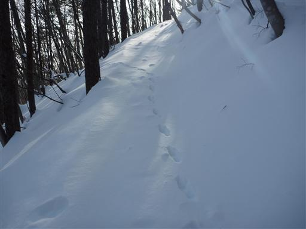
深い雪の中を歩いていくと車道と合流する。
途中で車道と合流することは分かっていたので、車道を歩けばよかったと後悔していたが、
いざ車道に辿り着いてみるとここも深い雪。やはりまともに歩くことはできない。
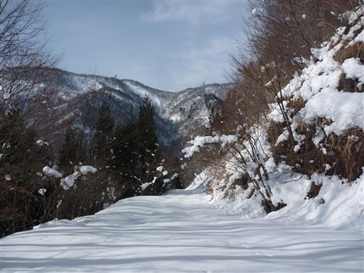
棘だらけの木。こんなに棘の多い幹を持つ木はあまり見かけないが、何の木だろうか？
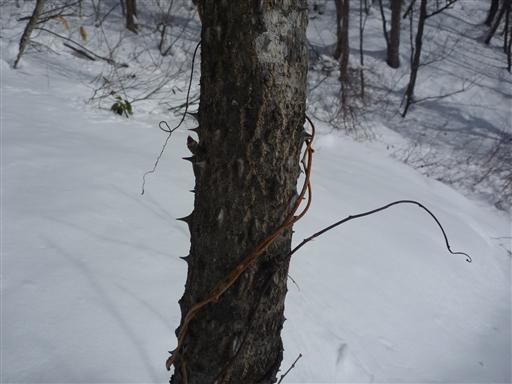
雪の間から笹が見えている。この辺りは一面笹原のようだ。
不思議なことに雪の上には小さな虫がうろうろしている。
厳冬期の豪雪地帯に、一体どうやって生活しているのだろう？
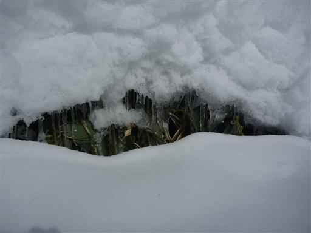
積もっている雪はふわふわで信じられないくらい柔らかい、そして重い。
膝上までの雪のラッセルは続き、行程は遅々として進まない。
わずかながら期待していた先行者の足跡もないため、単独行だと相当につらい。
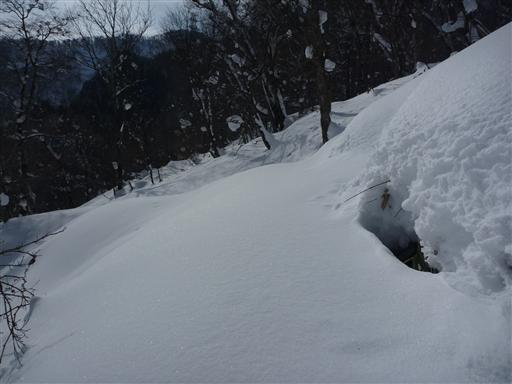
上空は見事な青空が広がっている。この季節にここまで晴れるとは思わなかった。
この辺りで登山道が分からなくなってしまう。赤沢峠目前なのだが残念ながら引き返すことにする。
高台に登ると展望が素晴らしいはずで、晴れてなければそれほど悔しくないのだが…
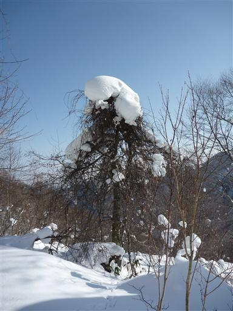
帰りは自分の足跡を忠実に辿っていく。
ラッセル済みで、しかも下り道なので帰りはスピードが出せる。
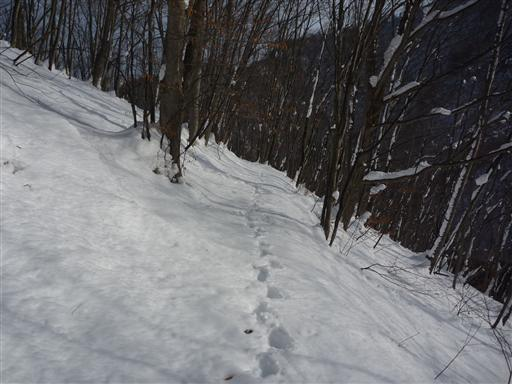
途中で登山道から外れて少し斜面を登ると、スキー場の上端に出てくる。
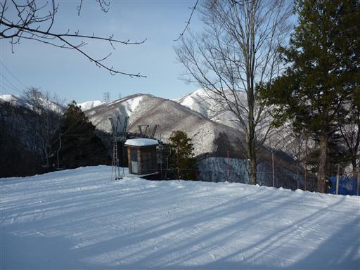
若干霞んでいるが、遠くのほうに白い峰が見える。
これが本日山で見た唯一の遠望だった。
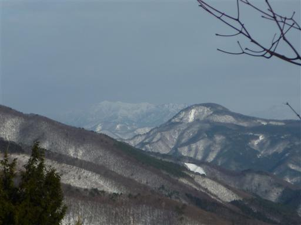
あとは下界に向かってひたすら歩いていく。
帰りは思った以上に行程がはかどり、一本早いバスに乗れそうだ。
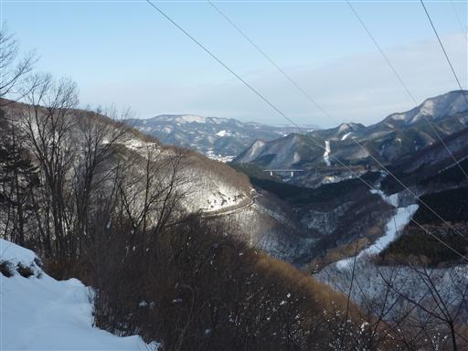
15:27 無事赤沢スキー場入口バス停到着。
最初から登頂はできないと思っていたが、道が分からなくなり
赤沢峠にすら辿り着けなかったというのは、少し残念だ。
雪のある山に登るときは、山頂までの距離が短いコースを選ぶことと
少なくともわかんぐらいは持っていく必要がありそうだ。
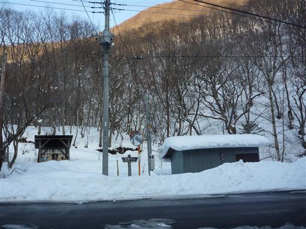